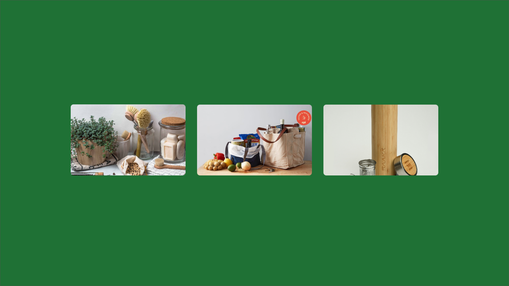

Preservação Ambiental: Como
podemos transformar nosso lixo
em recurso?
Aqui você vai descobrir como pequenas atitudes podem fazer grande diferença para o meio ambiente.
Aprenda a reciclar, reutilizar e descartar corretamente seu lixo.
O Problema do Lixo
Todo o lixo que produzimos afeta o meio ambiente, desde a extração de recursos para criar produtos,
até o seu descarte. Aprender a gerenciar nosso lixo é fundamental para um futuro mais sustentável.
A crescente quantidade
de lixo
Cada vez mais lixo é
produzido, e ele não pode ser
descartado em qualquer lugar.
O impacto do plástico no
meio-ambiente
Plásticos são o principal
poluente nos oceanos e
demoram centenas de anos
para se decompor.
Os problemas do
processo de reciclagem
A falta de investimentos em
infraestrutura de reciclagem
faz com que apenas uma
pequena parte dos resíduos
sejam reciclados.
Como reciclar o lixo?
A reciclagem é uma das formas mais eficazes de reduzir o impacto do lixo no meio ambiente. Descubra
como separar o seu lixo e como ele pode ser reciclado.
Separando o lixo
Plástico, papel, metal e
vidro devem ser separados
antes de serem
descartados.
Como o lixo é reciclado
Cada tipo de resíduo tem
um processo de
reciclagem específico.
O que pode ser feito
com os resíduos
reciclados
Os resíduos reciclados
podem se tornar novos
produtos ou gerar energia.
A importância da compostagem
Nem todo o lixo precisa ser jogado fora. Aprenda como transformar restos de alimentos em adubo para
suas plantas e jardins.
O que é
compostagem?
Compostagem é o processo
de transformar restos de
comida em adubo.
Benefícios do adubo
• Aumenta a fertilidade
do solo
• Reduz o uso de
fertilizantes químicos
• Promove a biodiversidade
Como fazer
compostagem em casa
• Compre ou construa
uma composteira
• Adicione os restos de
comida
• Misture com materiais
secos
• Vire a composteira a
cada duas semanas
• Use o adubo em suas
plantas e horta

Como usar menos plástico
O plástico é um grande problema para o meio ambiente. Aprenda algumas maneiras simples de reduzir
o uso de plástico no seu dia a dia.
Plástico na cozinha
Use potes, xícaras e talheres
de vidro ou inox em vez de
plástico descartável.
No supermercado
Leve sua própria sacola
reutilizável ao fazer compras.
No dia a dia
Opte por garrafas, canudos e
utensílios de bambu ou aço
inox, em vez de produtos
descartáveis.
A conservação da água
A água é um recurso essencial para a vida no planeta. Devemos fazer nossa parte para conservá-la e
usá-la de forma consciente.
Algumas dicas
• Tome banhos mais curtos
• Não deixe torneiras
abertas
desnecessariamente
• Regue as plantas no
início ou no fim do dia
• Use a máquina de
lavar e louça apenas
com carga máxima
Curiosidades sobre a
água
• 97,5% da água do
planeta é salgada e
imprópria para consumo
• Apenas 2,5% da água do
planeta é doce, mas
grande parte dela está
parada em geleiras e
regiões remotas
Água e mudanças
climáticas
O aquecimento global está
moldando a disponibilidade e
qualidade da água em todo o
mundo, tornando cada vez
mais importante conservá-la.
Pequenas ações que fazem a diferença
Comece hoje mesmo a fazer a diferença no mundo. Pequenas ações individuais podem ter grande
impacto quando se tornam um hábito coletivo.
Evite desperdícios
Planeje as compras e evite jogar comida fora.
Compre apenas o necessário e use as
sobras.
Economize energia
Vire a chavinha do chuveiro sempre que
possível e desligue os aparelhos da tomada
quando não estiver usando.
Ande mais a pé ou de bicicleta
Além de economizar energia, você ajuda o
meio ambiente e ganha um momento para se
exercitar.
Compartilhe informação
Repasse o conhecimento e incentive amigos,
familiares e colegas a adotarem práticas
sustentáveis.

Ajude a construir um
futuro mais
sustentável.
Pequenas mudanças no dia a dia fazem toda a diferença para o planeta. Que tal começar agora
mesmo?